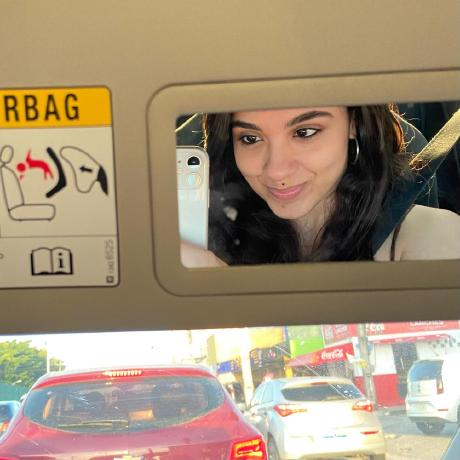

> nano ./README.md
Hello! Im glad you stopped by to know a bit more about me!
Im Ana Clara, Im 22 yo, and Im an undergraduate student in Computer Science at University of Fortaleza, 🇧🇷.
I started my degree in the first semester of 2025, right now Im exactly halfway through. In 2026, I was recommended by my professor,
to participate in a Undergraduate Research Program, at
NCDIA. At the lab, I work with geospatial data processing
and graph-based analysis applied to urban mobility, using Python,
GeoPandas, Shapely, NetworkX, and Rasterio to integrate
pedestrian networks, public transportation data, population data, points of interest, and
other spatial datasets.
A few weeks later, I joined SME, Municipal Secretariat of
Education,
where I work to understand the business needs and translate requirements
into system improvements, fixes and new functionalities.
My work also includes developing SQL reports, and working with
enterprise and legacy technologies such as
Java, Spring, Hibernate, JSF,
Oracle SQL, React,
Git, and GitLab.
At University, Im always surrounded by a few but really amazing mates, we're always helping each other out. You can check our projects together and my individual projects on the projects page, also in this portfolio.
Outside of coursework, I've been directing my studies toward backend development and software engineering , with the goal of building the skills required for real software development. My current focus is primarily on the Java ecosystem, especially Spring Boot, while exploring topics such as API development and integration, databases, application architecture, design patterns, SOLID principles, and microservices . Rather than focusing only on specific technologies, I'm interested in understanding how applications are designed, structured, and maintained, and how different systems and services communicate with each other.
